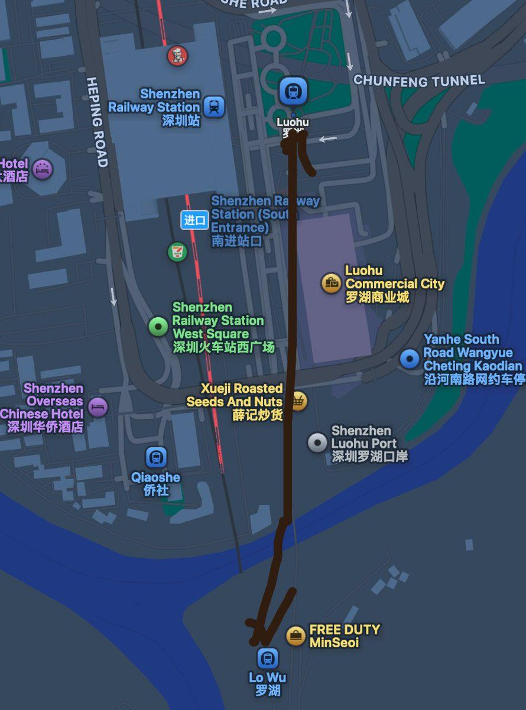

RedFox（2代目）🇲🇴🇭🇰
@FoxRed695449
@AcboxLiu 閣下似乎在查詢《我們未來的鐵路——鐵路發展策略2000》中的北環線，尤其是北環線皇崗口岸支線

📦Acbox
@AcboxLiu
你说有没有一种可能，我们把这两个站打通，然后给一个八车厢编组的车作为跨境列车，前四节车厢为离境车厢，屏蔽门不开放，第五节车厢作为离境厅，设海关。当列车行驶到罗湖时，后四节车厢自动分离，前四节离境车厢继续走
（纯属玩笑） https://t.co/MHVzYY74IQ